SIEM Implementation and Threat Detection
March 2026
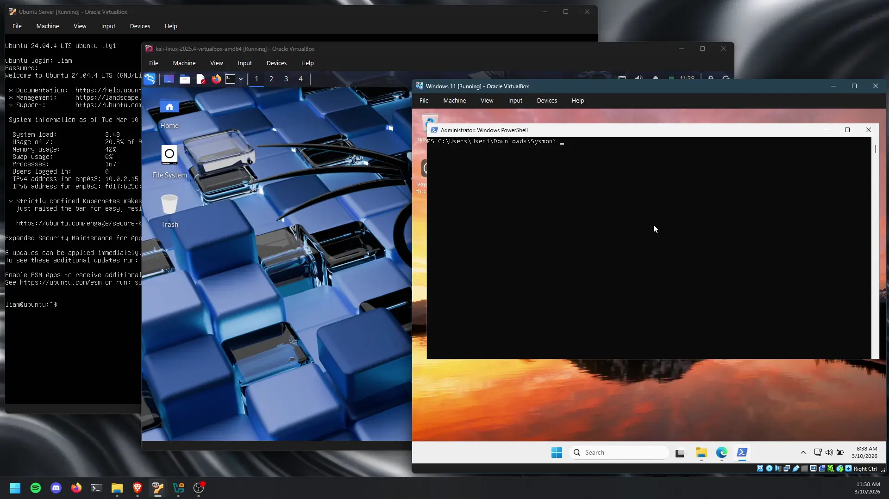
Summary
This report documents the deployment and validation of a controlled cybersecurity lab environment built on Oracle VirtualBox, consisting of four virtual machines. Two Windows 11 endpoints, an Ubuntu server running the Wazuh SIEM, and a Kali Linux attacker node, which are networked to simulate a segmented enterprise environment. Following initial resource provisioning challenges, the Wazuh SIEM was successfully deployed and integrated with endpoint agents. Three attack scenarios were executed: network reconnaissance via Nmap, an RDP brute-force attack using Hydra, and a simulated malware/PowerShell post-exploitation exercise. Of these, only the brute-force authentication attack generated reliable detections in Wazuh out-of-the-box, while reconnaissance and PowerShell-based activity went undetected under the default configuration. These gaps underscore the need for additional tuning and expanded detection rules to achieve broader threat visibility across the environment.
Setting up Virtual Machines
As part of the lab environment preparation, I deployed a controlled virtual infrastructure using Oracle VM VirtualBox. This required installation of multiple operating system images to support endpoint, server, and adversary simulation use cases.
The environment consists of four virtual machines:
| Host | Role | IP | OS |
|---|---|---|---|
| ubuntu | SIEM / Manager | 192.168.56.107 | Ubuntu Server |
| DESKTOP-E79UHMF | Endpoint (Agent) | 192.168.56.101 | Windows 11 |
| DESKTOP-8L5S2E4 | Endpoint (Agent) | 192.168.56.102 | Windows 11 |
| kali | Attacker (simulated threat) | 192.168.56.104 | Kali Linux |
Network configuration was implemented to simulate a segmented enterprise environment. Each virtual machine was provisioned with two network interfaces:
- A NAT adapter to allow outbound internet connectivity for updates and package installation.
- A Host-Only adapter to establish an isolated internal LAN for inter-VM communication and controlled attack simulation.
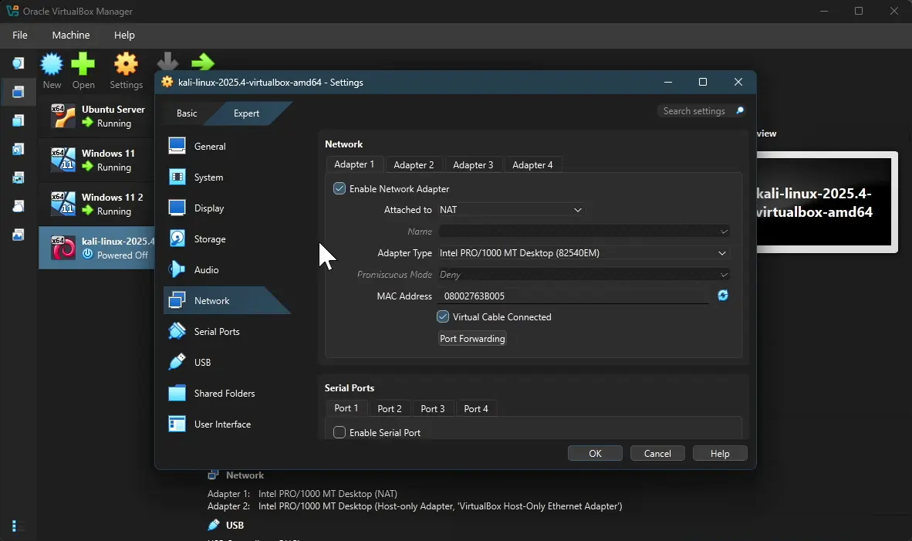
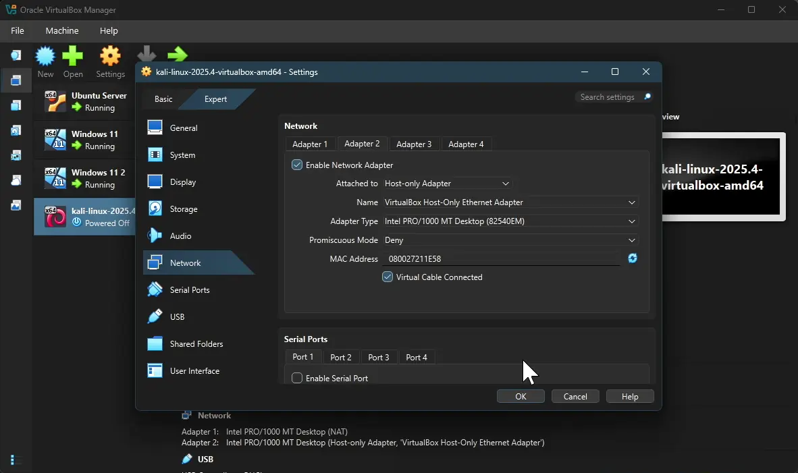
To validate network functionality, I performed connectivity testing across all virtual machines. This required modifying default firewall configurations on the Windows 11 endpoints to permit ICMP echo requests, which are blocked by default.
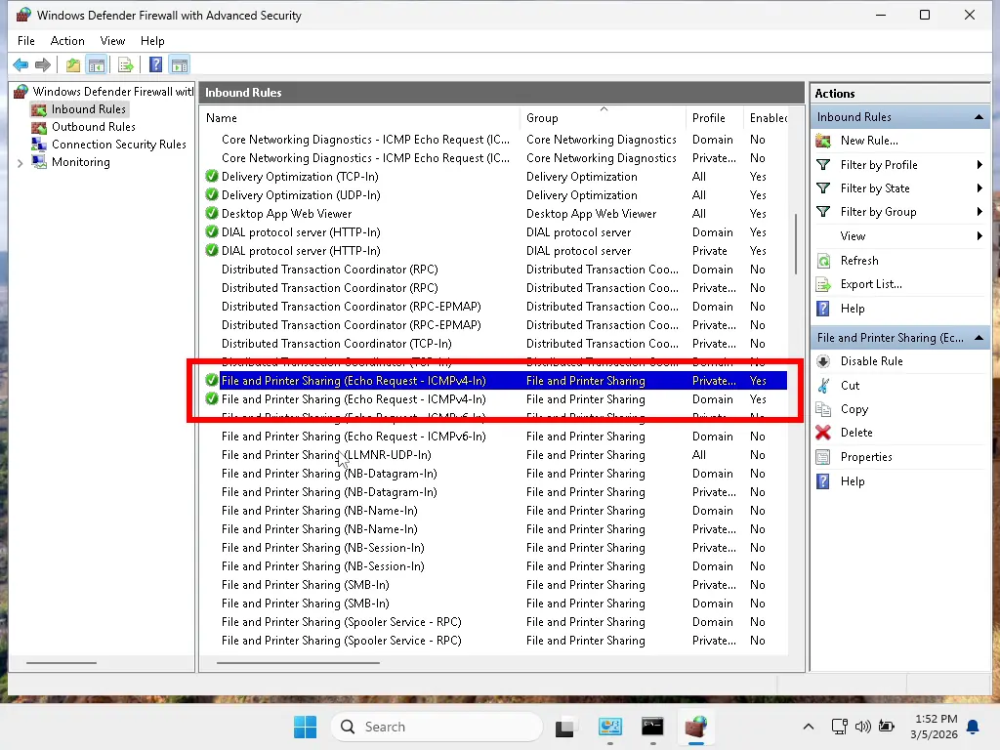
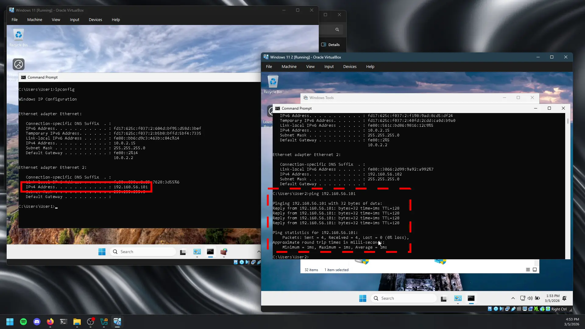
After adjusting these rules, I verified successful bidirectional communication using ICMP (ping), confirming that all systems were able to transmit and receive traffic across the internal network.
Installing Wazuh on Ubuntu Server
During SIEM deployment, I utilized the automated installation script provided by Wazuh to deploy its core components: the Wazuh server, Wazuh indexer, and Wazuh dashboard on an Ubuntu Server host.
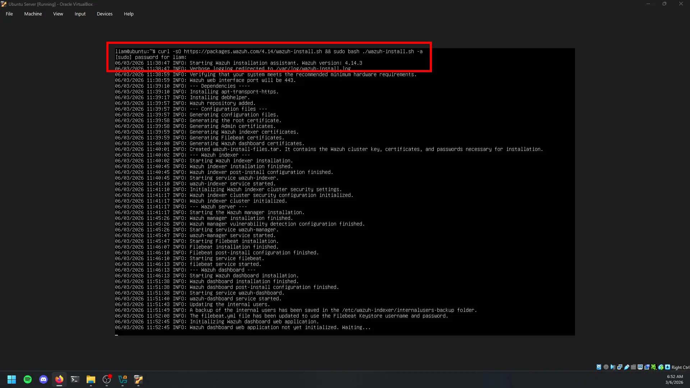
Initial installation attempts failed due to insufficient system resources allocated to the virtual machine. The baseline configuration (2 CPU cores, 2GB RAM, and 50GB storage) proved inadequate, with the primary issue being disk exhaustion during the installation process, which caused repeated failures.
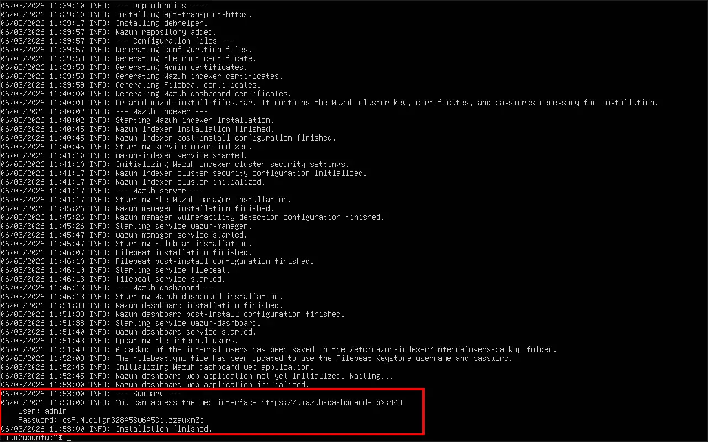
To remediate this, I increased the allocated storage to 100GB, which resolved the installation errors. Additionally, I scaled system resources to 6GB of RAM and 6 CPU cores to ensure optimal performance and stability of the SIEM environment under expected workload conditions. Following successful deployment, the installation process generated authentication credentials required to access the Wazuh dashboard.
Network reconnaissance via Kali Linux
Within the isolated lab network, the adversary simulation host running Kali Linux was leveraged to perform network reconnaissance against internal assets. Given that all virtual machines reside on the same subnet, successful host discovery of the Windows 11 endpoints was expected.
Initial reconnaissance was conducted using Nmap host discovery (nmap -sn 192.168.56.0/24) to enumerate live systems within the network range. This scan identified active hosts, confirming the presence of the Windows endpoints and validating network visibility from the attacker perspective.
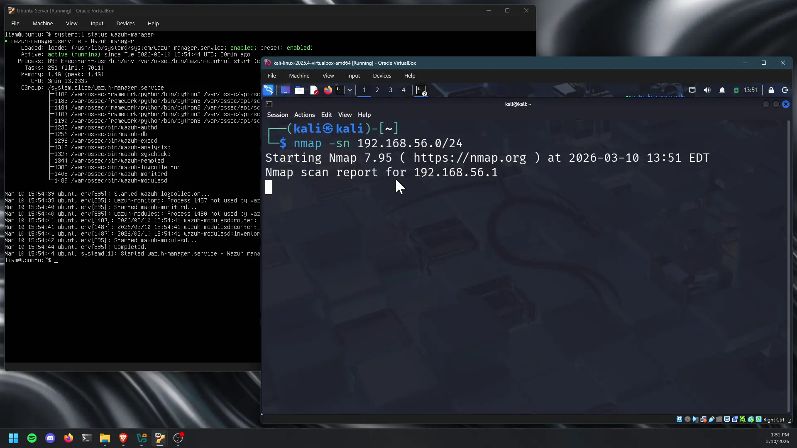
Following host identification, targeted enumeration was performed against the Windows 11 endpoint using a service and version detection scan (nmap -sV -sC -O 192.168.56.101). This activity aimed to identify exposed services, open ports, operating system details, and other relevant metadata that could support further exploitation.
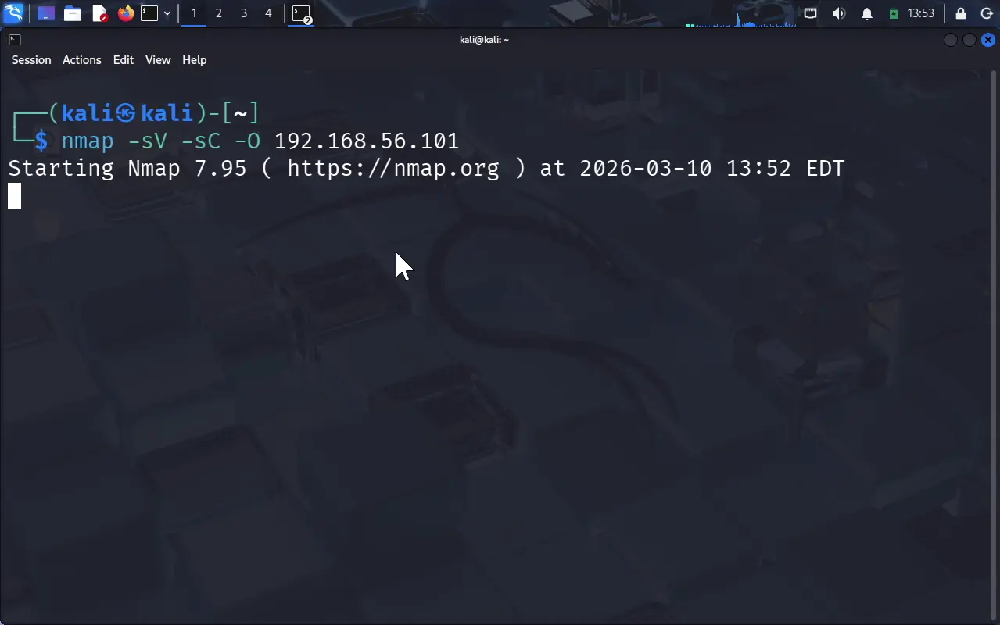
To simulate more aggressive reconnaissance behavior and generate higher volumes of telemetry, an intensive scan (nmap -A -T4 192.168.56.101 192.168.56.102) was executed against both Windows systems. This included OS detection, script scanning, version detection, and traceroute functionality, effectively increasing the likelihood of detectable events.
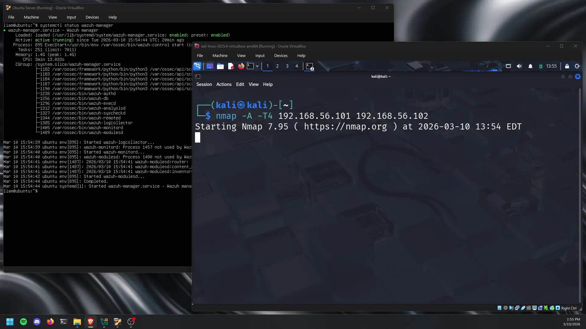
Despite generating this activity, analysis within the Wazuh dashboard, specifically within threat hunting and log monitoring views, did not reveal alerts corresponding to network reconnaissance behavior. This indicates that default detection rules were not configured to flag Nmap-based scanning or similar reconnaissance techniques out-of-the-box.
However, this gap shows an opportunity for detection engineering. With proper rule tuning and potentially enabling additional data sources (enhanced Windows logging or network-based telemetry), this type of reconnaissance activity can be effectively identified and alerted on within the SIEM environment.
Brute Force Attack
To simulate a credential-based attack scenario, I first enabled Remote Desktop Protocol (RDP) on the Windows 11 endpoints to expose a remote access service for targeting. This configuration created an attack surface that could be leveraged from the adversary simulation host running Kali Linux.
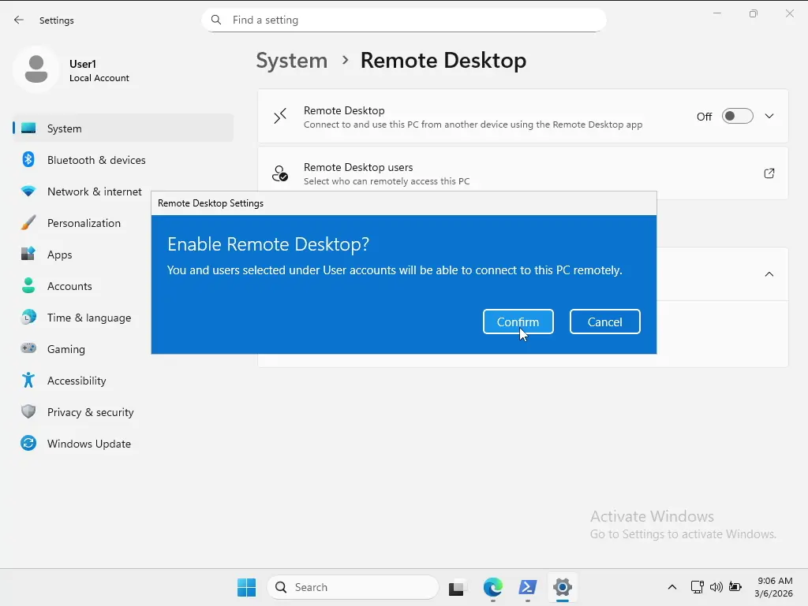
With RDP accessible, I initiated a credential stuffing attack using Hydra against the Windows 11 virtual machine. The attack leveraged a commonly used password wordlist (rockyou.txt) to attempt authentication over the RDP service (hydra -l User2 -P /usr/share/wordlists/rockyou.txt rdp://192.168.56.102 -t 4 -V). This approach simulates real-world adversary behavior using known leaked or weak credentials.
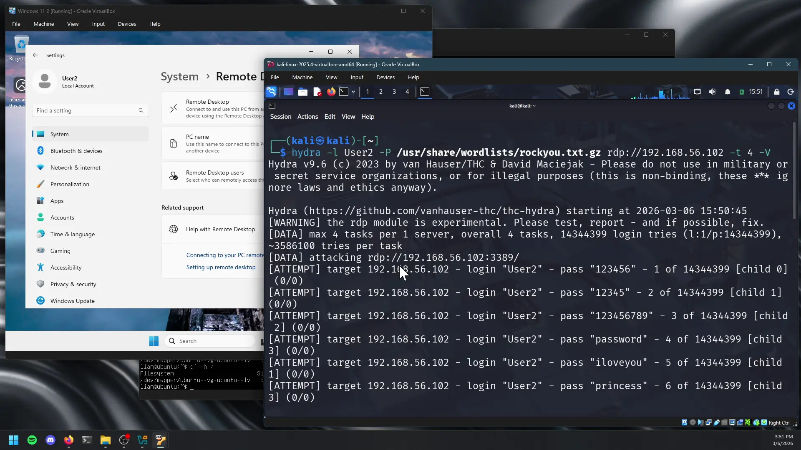
During testing, I observed inconsistent results related to RDP service availability. When RDP was enabled on one endpoint (192.168.56.101) without a system restart, the attack did not produce observable results or authentication attempts. However, after enabling RDP on the second endpoint (192.168.56.102) and performing a system reboot, the service appeared to initialize correctly, allowing the attack to proceed as expected.
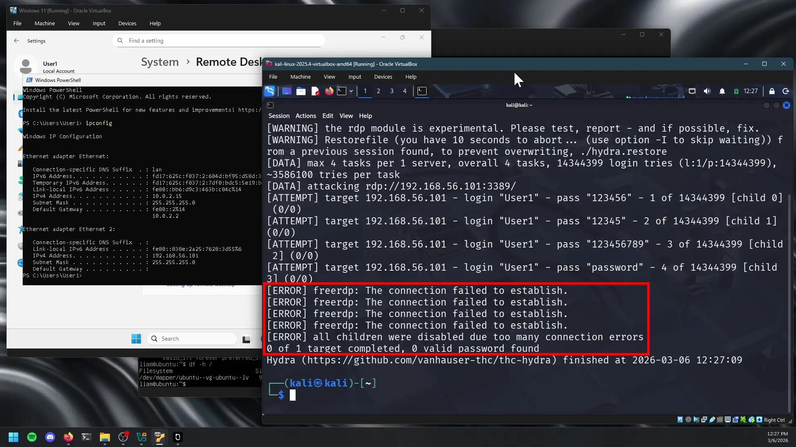
Subsequently, the credential stuffing activity generated multiple failed logon attempts, which were successfully ingested and detected by the Wazuh agent deployed on the target Windows 11 system. These events were visible within the Wazuh dashboard under the agent’s threat hunting interface, specifically within the “Events” view, where failed authentication attempts were logged and correlated.
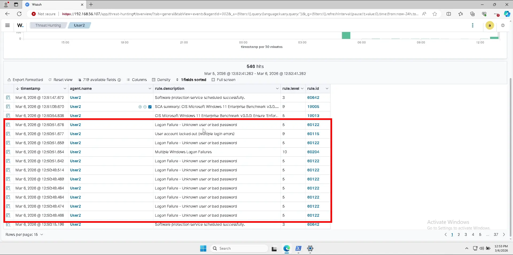
This exercise demonstrates successful detection of brute-force style authentication attacks at the endpoint level, while also showing the importance of proper service initialization and system state validation (post-configuration reboot) when exposing services for testing or monitoring purposes.
Powershell and staged payload
To simulate malware execution and post-exploitation behavior, I conducted a two-part attack scenario involving a known test payload and suspicious PowerShell activity on the Windows 11 endpoints. This exercise was designed to reflect common adversary techniques, including payload delivery and living-off-the-land (LOTL) activity.
I began by creating the industry-standard EICAR test file on a Windows endpoint using PowerShell. This file safely simulates malicious behavior without introducing real malware. Upon execution, Microsoft Defender detected and quarantined the file, generating a security alert.
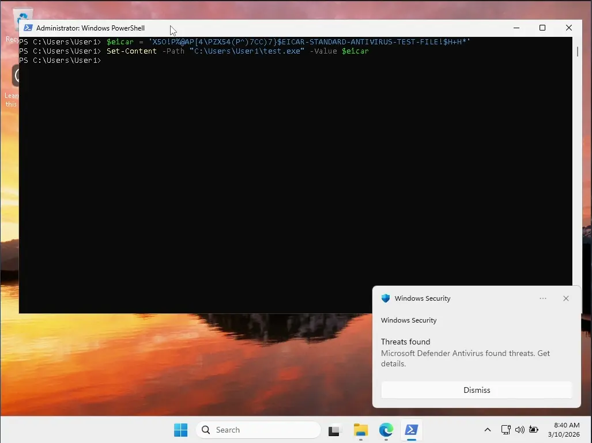
After integrating Defender logs into the Wazuh event pipeline, the alert was successfully ingested and made visible within the Wazuh dashboard. This confirmed that endpoint protection telemetry was being properly collected and correlated, providing visibility into malware-related activity.
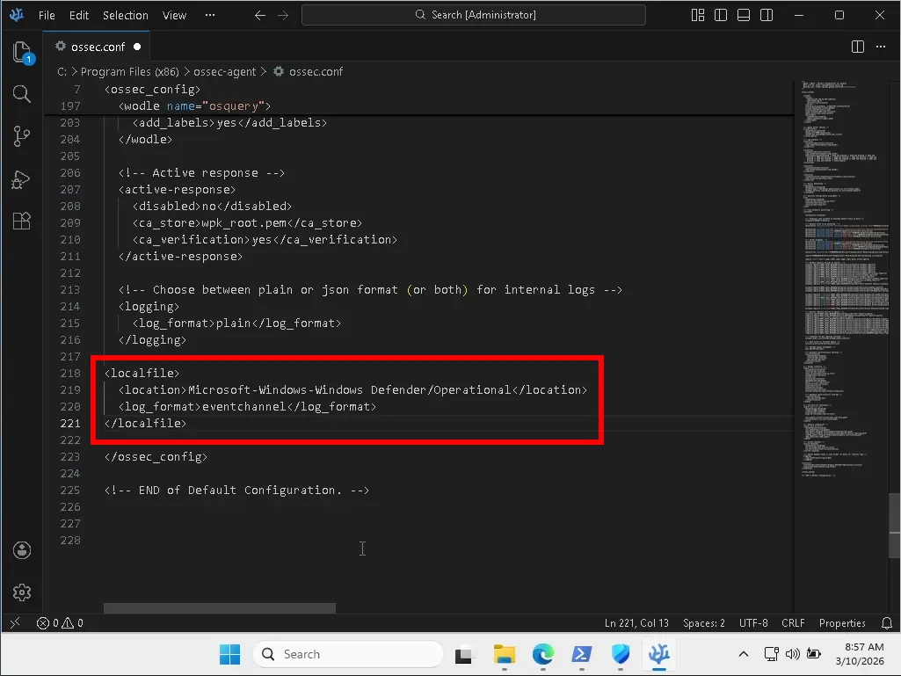
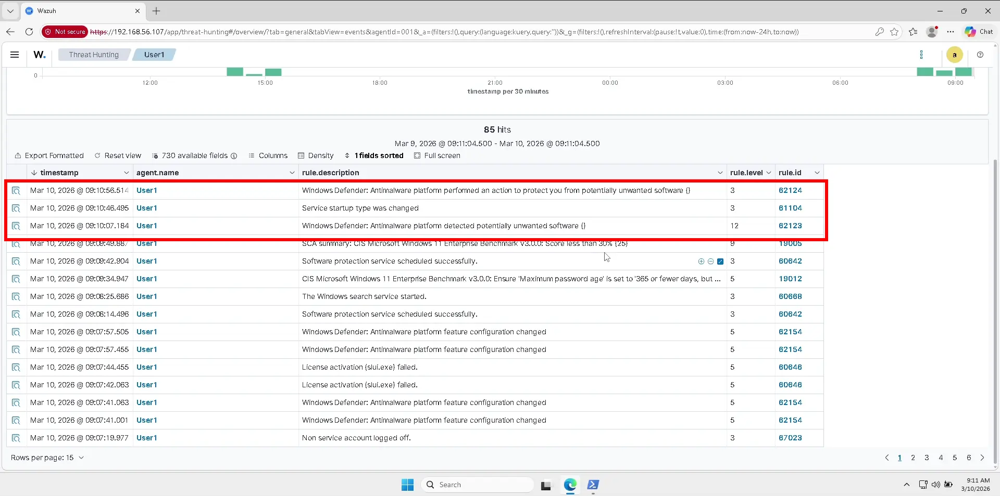
To simulate post-exploitation behavior, I executed several PowerShell techniques commonly associated with adversary activity, including:
- Encoded command execution to obscure intent
- File download from a remote host to simulate payload staging
- Attempts to modify system security settings
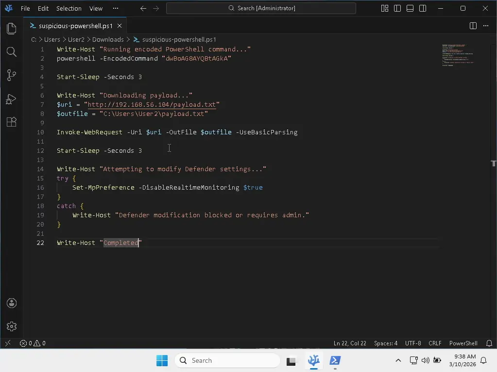
A simple HTTP server was also hosted on the Kali Linux system to emulate payload delivery infrastructure.
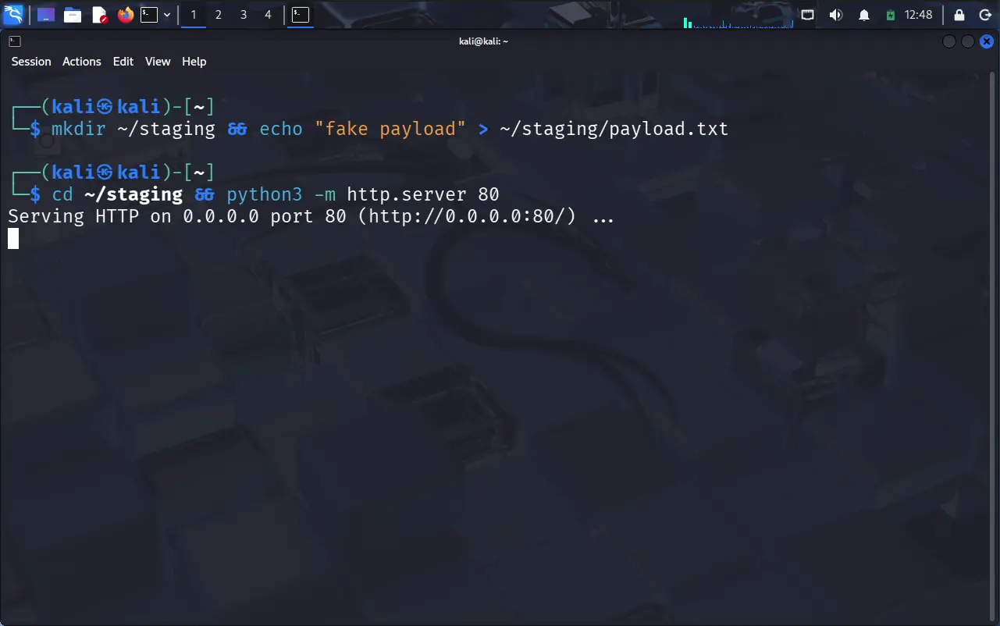
While these actions successfully generated activity on the endpoint, no corresponding alerts were observed within Wazuh for the PowerShell-based behavior. This outcome is consistent with a default deployment where more advanced logging and detection use cases, such as detailed PowerShell monitoring, require additional configuration and tuning.
Resources Used
- https://www.virtualbox.org/
- https://ubuntu.com/server
- https://www.microsoft.com/en-us/software-download/windows11
- https://www.kali.org/get-kali/#kali-virtual-machines
- https://documentation.wazuh.com/current/quickstart.html
- https://nmap.org/book/man-host-discovery.html
- https://documentation.wazuh.com/current/proof-of-concept-guide/detect-brute-force-attack.html
- https://documentation.wazuh.com/current/proof-of-concept-guide/detect-remove-malware-virustotal.html
- https://documentation.wazuh.com/current/user-manual/capabilities/malware-detection/win-defender-logs-collection.html